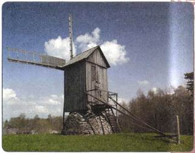
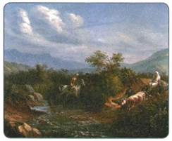
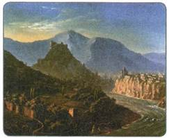
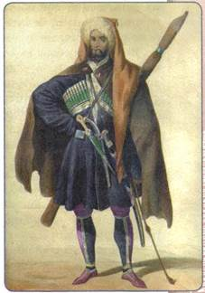

Материал для самостоятельной работы и проектной деятельности учащихся
Что такое национальная политика? В чём состояли её особенности при Александре I?
Российская империя представляла собой многонациональное государство, населённое представителями разных народов. В правление Александра I в состав России были включены новые земли. Помимо польских территорий (населённых в основном поляками и евреями), были присоединены земли, населённые финнами и шведами. Особый статус имела также Прибалтика, находившаяся в составе страны с XVIII в. В течение всего XIX столетия Россия продвигалась на Кавказ, принимая власть над его многочисленными народами.
Освоение присоединённых к России в конце XVIII в. новороссийских и кубанских земель вызвало поток переселенцев не только из центральных районов страны, но и из-за границы. При Александре I в Северном Причерноморье поселились болгары, греки, сербы, гагаузы, а также немцы.
При проведении реформ требовалось учитывать особенности разных регионов, проводить взвешенную национальную политику в отношении каждого из народов.
1. Финляндия в составе России
В 1809 г. по итогам русско-шведской войны Россия присоединила территорию Финляндии. Этот регион под названием Великое княжество Финляндское сразу получил особый статус в составе России. Финляндия была наделена довольно большой самостоятельностью в управлении, имела свой сейм (собрание представителей всех сословий), без согласия которого не мог быть издан, изменён или отменён ни один закон.
Для управления Великим княжеством Финляндским царь назначал генерал-губернатора (как правило, им становился выходец из прибалтийских дворян). Он в свою очередь возглавлял Комитет главного управления (высшее административное учреждение из 12 местных жителей — 6 дворян и 6 недворян). Всё делопроизводство должно было вестись, как и раньше, на шведском языке. Создавался также Правительственный совет, управлявший судом и государственным хозяйством. Автономными оставались система образования и система местного самоуправления. Все должностные назначения в крае осуществлялись императором. К Великому княжеству Финляндскому был присоединён город Выборг с окрестностями.
Такая политика властей позволяла обеспечить относительно спокойное развитие Финляндии в составе империи.
2. Царство Польское и его конституция
Поляки стали третьим по численности народом страны (после русских и украинцев), а евреи (в больших количествах населявшие польские земли) — четвёртым. Царство Польское, образованное в 1815 г., имело значительную самостоятельность. Согласно конституции главой Царства Польского был российский император, он должен был приносить присягу на верность принимаемой конституции. Законодательная власть принадлежала царю и сейму, состоявшему из двух палат. Нижняя палата сейма избиралась от городов и от дворянства. Избирательное право было ограничено возрастным и имущественным цензом. Сейм не обладал правом принимать законы, он мог лишь представлять обращение на имя императора о предложении принятия тех или иных законов. Все проекты законов должны были обсуждаться в Государственном совете.
Конституция Царства Польского гарантировала неприкосновенность личности, свободу печати, обязывала использовать польский язык в государственных учреждениях, назначать на государственные, судебные и военные посты только поляков.
Принятие либеральной конституции, весьма прогрессивной для того времени, привело польское дворянство в состояние восторга и вселило надежды на дальнейшее усиление независимости Царства Польского и расширение его территории за счёт украинских и белорусских земель бывшей Речи Посполитой. Таким образом, отношение к конституции было разным: поляки считали принятие конституции началом пути к полной самостоятельности, а император Александр I полагал, что и так сделал для Польши слишком много.
Это противоречие вызвало формирование мощного польского национально-освободительного движения, которое развернулось в последующие десятилетия (об этом см. с. 80, 147), став источником многих проблем для власти.

Ветряная мельница в Прибалтике
3. Прибалтика в составе России
Реформаторская деятельность императора затронула также ещё одну национальную окраину Российской империи — территорию Прибалтики. Прибалтийские народы в начале XIX в. жили в трёх западных губерниях России — Эстляндской, Лифляндской (присоединены ещё в 1721 г.) и Курляндской (вошла в состав империи при третьем разделе Речи Посполитой). Крестьянский вопрос здесь был осложнён ярко выраженными национальными противоречиями: большинство помещиков в Прибалтике имело немецкое происхождение, крестьянами же были предки современных эстонцев и латышей.
Александр I попытался смягчить ситуацию. В 1804 г. по его указу все прибалтийские крестьяне признавались прикреплёнными к земле, а не к помещику, запрещалась их продажа без земли. Крестьяне объявлялись владельцами своих наделов, они могли передавать участки земли по наследству. Был также ослаблен произвол помещиков в отношении земледельцев, по каждому имению были составлены списки повинностей. В сложном положении оказались крестьяне-батраки, не имевшие земли.
Этот закон оказался невыгоден для прибалтийских дворян, потерявших часть своих земель, и в 1816—1819 гг. в Эстляндской, Лифляндской и Курляндской губерниях Александр I провёл новую реформу. Здесь была отменена крепостная зависимость крестьян от помещиков — крестьяне получили личную свободу, но теряли все права на свои земельные наделы. Собственниками земли объявлялись помещики, крестьяне же могли лишь арендовать землю у помещиков. Согласно реформе создавались крестьянские волостные общины и крестьянские суды, контроль за деятельностью которых, однако, осуществляли также помещики.
4. Народы Кавказа
Карта народов Кавказа была всегда чрезвычайно пёстрой. К началу XIX в. здесь проживало более 50 народов — представителей самых разных языковых семей: армянской (армяне) и иранской (осетины, курды, таты) групп индоевропейской семьи, картвельской семьи (грузины), северокавказской семьи (абхазы, абазины, кабардинцы, черкесы, адыгейцы, шапсуги, чеченцы, ингуши, аварцы, лакцы, даргинцы, табасараны, лезгины, агулы, рутульцы, цахуры), а также тюркской (кумыки, ногайцы, карачаевцы, балкарцы, азербайджанцы) группы алтайской семьи.

Кавказский пейзаж с горцами. Художник М. Ю. Лермонтов

Тифлис. Художник М. Ю. Лермонтов

Черкес. Рисунок XIX в.
Эти народы говорили на разных языках и исповедовали разные религии (христианство у грузин, армян, осетин, мусульманство суннитского толка у большинства горских народов, мусульманство шиитского толка у части дагестанцев и азербайджанцев). Горские племена занимались скотоводством, а также подсобными промыслами — охотой, рыбной ловлей. У большинства из них господствовали родоплеменные отношения.
Вся первая четверть XIX в. проходила под знаком расширения российских владений на Кавказе.
Каждое из расположенных здесь царств, княжеств, ханств и султанатов имело свою историю вхождения в состав империи: одни сами принимали такое решение, другие вели с русскими войсками войны за независимость.
Присоединение кавказских территорий к России, с одной стороны, надёжно защитило их от попыток подчинения со стороны Турции и Ирана. Началось взаимодействие экономики и культуры народов Кавказа и России, имевшее обоюдовыгодный характер. Русская военная и гражданская администрация выступала арбитром в вековых межнациональных и родовых спорах. С другой стороны, включение такого сложного региона в состав империи стало источником многих внутренних проблем в будущем, а также обострило противоречия России с южными соседями. Внедрение новой системы управления и культурных обычаев, проникновение переселенцев из России нередко вызывали протест местного населения. Наконец, освоение новых земель требовало от казны огромных расходов, что отвлекало средства от развития центральных областей России.
5. Население Сибири
Численность населения Сибири постепенно росла: если в начале XIX в. здесь проживало около 200 тыс. человек, то к середине века стало уже 600 тыс. Сюда переселялись жители из центральных районов, однако это создавало угрозу утраты местными народами своих самобытных черт.
Все нерусские народы Сибири именовались в то время термином инородцы. Многие из этих народов сохраняли остатки родоплеменных отношений. Они активно перемещались по огромным просторам. Манси и ненцы продвигались на восток, занимая земли энцев. Селькупы двигались на юг по Енисею. Тунгусы (эвенки) расселялись на северо-запад, а чукчи теснили юкагиров. Якуты, численность которых быстро росла, заметно расширили территорию своего проживания. Активно шёл процесс формирования новых народов. Хозяйственная и культурная близость племён, проживавших в Туве, стала основой их этнической общности. Обитавшие в Минусинской котловине племена койбалов, качинцев, бельтиров, сагайцев, кызыльцев составили хакасский народ, а монголоязычные племена Прибайкалья и Забайкалья — бурятский.
Всё это требовало от властей, с одной стороны, бережного отношения к народам Сибири, а с другой — включения всех её коренных жителей в хозяйственную и культурную жизнь российского общества.
С целью упорядочить управление инородцами в 1822 г. был принят Устав об управлении инородцев, подготовленный при активном участии М. М. Сперанского (который был тогда генерал-губернатором Сибири). Коренные народы, согласно этому документу, делились на три разряда — бродячие, кочевые и оседлые.
Оседлые инородцы полностью были приравнены в своих правах к государственным крестьянам, они несли все те же повинности. Это были татары, алтайцы, шорцы, южные ханты и манси и др.
Бродячими инородцами (ненцы, коряки, юкагиры и другие охотничьи народы) управляли «князья» из числа местной родоплеменной верхушки.
Похожее управление получили и кочевые инородцы (буряты, якуты, эвенки, хакасы и др.). Территория их расселения делилась на улусы и стойбища.
Устав предусматривал постепенный переход бродячих и кочевых народов в оседлые и в итоге — уравнивание их в правах с русским крестьянством (за исключением воинской службы, которую инородцам нести не предполагалось).
Устав был самым прогрессивным для своего времени документом в отношении коренных народов, аналогов которому не имело ни одно государство того времени.
ПОДВЕДЁМ ИТОГИ
В первой четверти XIX в. значительно расширился национальный состав населения Российской империи. Власть была поставлена перед необходимостью строить национальную политику с учётом интересов не только наиболее крупных, но и малых народов. На этом пути правительство Александра I добилось значительных успехов, наиболее ярким из которых стало принятие конституции Царства Польского в 1815 г. и Устава об [управлении инородцев в 1822 г.
Вопросы и задания для работы с текстом параграфа
1. Используя текст параграфа, докажите, что Великое княжество Финляндское имело особые условия управления и самостоятельность в рамках Российской империи. 2. Сравните национальную ситуацию в Финляндии и на Кавказе. Какое главное различие вы можете назвать? 3. Кого в XIX в. называли инородцами? 4. Какие особенности в управлении Сибирью существовали в первой четверти XIX в.? Чем они были обусловлены? 5. Расскажите об особенностях положения Прибалтики в составе Российской империи. 6. Отличалось ли положение прибалтийских крестьян от положения крепостных крестьян основной части страны?
Работаем с картой
1. Пользуясь картой, определите, какое значение имело присоединение Финляндии и части Польши с точки зрения географического положения России.
2. Сравните с помощью карты территории Речи Посполитой в 1760-е гг. (накануне разделов) и территорию Царства Польского в 1815 г.
Думаем, сравниваем, размышляем
1. Назовите национальности и народности, входящие в состав Российской империи в первой половине XIX в., которые упоминаются в параграфе. Подготовьте сообщение об одном из народов Российской империи. 2. Сравните положение Финляндии и Польши в составе Российской империи, найдите общее и отличия.
3. Подготовьте тезисы к дискуссии на тему «Положительные и отрицательные стороны присоединения кавказских земель к Российской империи». 4. Используя материалы Интернета, сделайте презентацию о культуре и традициях одного из народов Кавказа, упомянутых в параграфе.